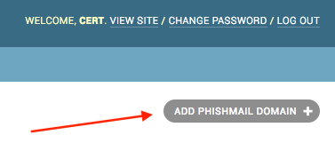

Installation
Requirements
Swordphish requires a few important things before starting installation process:
- A server: we recommend to adjust the choice of the server depending on the campaign sizes you want to do (100k targets is a BIG campaign)
- At least two domains names: one to join Swordphish web page and at least one phishing domain (to send mails and host phishing pages)
- A mail server: we won't cover the mail server installation here, but keep in mind that a well configured mail server can accelerate drastically phishing mails diffusion
The domain name used to join Swordphish interface must have at least an A
entry in the DNS zone pointing to the server's IP.
The domain(s) used to send mail and host phishing pages must have at
least two entry in the DNS Zone. An A entry pointing to the server and a
subdomain wildcard entry pointing to the same server IP (it allows to
use subdomains in phishing pages).
The following installation process has been tested on Ubuntu Server (16.04) but you can use any Linux (or Unix?) distro you like, but we won't provide any support for that.
Installing Dependencies
Required packages:
apt install build-essential libpq-dev nginx git supervisor redis-server
apt install python3-dev python3-pip postgresql postgresql-contrib
apt install virtualenv virtualenvwrapper
Create a dedicated user for security purpose:
adduser swordphish --disabled-password
Add the following line in the user's \~/.profile to enable virtualenvwrapper:
export WORKON_HOME=~/.virtualenvs
mkdir -p $WORKON_HOME
source $(which virtualenvwrapper.sh)
Switch to newly created user and git-clone Swordphish repository:
su - swordphish
git clone https://github.com/societe-generale/swordphish-awareness.git swordphish
Ensure that virtualenvwrapper has been loaded in user's environment and create the virtualenv:
source ~/.profile
mkvirtualenv -p python3 -a /home/swordphish/swordphish/ swordphish
You can choose not to create the virtualenv, but we highly recommend it to prevent any side effect with another app installed on the same server for example.
Install all the python dependencies:
pip install -r requirements.txt
Configuring and Creating database
Switch to postgresql user:
su - postgres
createuser -P swordphish
createdb --owner swordphish swordphish
Don't forget the password you'll need it later!
Depending on the size of the campaigns you want to do, consider tuning Postgresql performance depending of the machine you run swordphish on.
Here is a list of parameter you should consider adapt:
- shared_buffers: memory used to cache data, consider setting this to 1/4 of the total RAM
- work_mem: 50MB is a nice value if you have more than 16go of RAM
- maintenance_work_mem: the maximum memory postgres can use for maintenance (index creation etc.)
- wal_buffers: 1/32 of the size of shared_buffers, with an upper limit of 16MB
- effective_cache_size: 1/2 of total memory would be a normal conservative setting
Swordphish Configuration
Now let's adapt Swordphish to your environment. Go to the path where you've installed the code and copy the settings.py file to a new one:
cd /home/swordphish/swordphish/
cp Swordphish/settings.py Swordphish/settings_prod.py
Then generate a new secret-key:
workon swordphish
./manage.py generate_secret_key
Then open the newly created settings_prod.py with your favorite editor. Here is the value you must change:
- ADMINS: fill the array with the different admins' mails (they'll receive stacktraces and potential errors)
- DEBUG: set this to False once you have tested everything
- DATABASES: set the credentials of the postgres account you created before
- SWORDPHISH_URL: set this to the URL you'll use to reach Swordphish interface
- USER_ACCOUNT_CREATION_MAIL_SENDER: the mail address which will be used to send swordphish accounts creation mails
- USER_ACCOUNT_CREATION_MAIL_CONTACT: the mail address used as reply to in the swordphish accounts creation mails
- SERVER_EMAIL: mail address which will be used to send different mails like stacktraces
- EMAIL_HOST: mail server address
- EMAIL_PORT: mail server port
- EMAIL_HOST_USER: optional
- EMAIL_HOST_PASSWORD: optional
- HOSTING_DOMAIN: the domain which will be used to reach swordphish interface (used to prevent targets from reaching the interface using phishing domains)
Let's start using this freshly created config file:
export DJANGO_SETTINGS_MODULE='Swordphish.settings_prod'
Now let's create DB structure:
./manage.py migrate
And create super admin user (use mail address as login):
./manage.py createsuperuser
Finally collect different static files within static dir:
./manage.py collectstatic
Setting up supervisor
Now everything is configured let's create supervisor configuration files. This will start the app and the celery tasks. We chose supervisor because it's system agnostic and work whether you use SystemD, Upstart or whatever...
Three configuration files are mandatory:
cd /etc/supervisor/conf.d/
Use your favorite editor to create the three following files (adjust the different values depending on your system):
- swordphish_celery_beat.conf: to start the beat scheduler:
[program:swordphish_celery_beat]
environment=DJANGO_SETTINGS_MODULE='Swordphish.settings_prod'
directory=/home/swordphish/swordphish/
command=/home/swordphish/.virtualenvs/swordphish/bin/celery -A Swordphish beat -l info
user=swordphish
autostart=true
autorestart=true
stdout_logfile=/var/log/supervisor/swordphish_celery_beat.log
redirect_stderr=true
- swordphish_celery_worker.conf: to start the workers:
[program:swordphish_celery_worker]
environment=DJANGO_SETTINGS_MODULE='Swordphish.settings_prod'
directory=/home/swordphish/swordphish/
command=/home/swordphish/.virtualenvs/swordphish/bin/celery -A Swordphish worker -l info
user=swordphish
autostart=true
autorestart=true
stdout_logfile=/var/log/supervisor/swordphish_celery_worker.log
redirect_stderr=true
- swordphish.conf: to start the app server:
[program:swordphish]
environment=DJANGO_SETTINGS_MODULE='Swordphish.settings_prod'
directory=/home/swordphish/swordphish/
command=/home/swordphish/.virtualenvs/swordphish/bin/uwsgi --ini /home/swordphish/swordphish/uwsgi/uwsgi.ini
user=swordphish
autostart=true
autorestart=true
stdout_logfile=/var/log/supervisor/swordphish.log
redirect_stderr=true
And start supervisor services:
supervisorctl reread
supervisorctl reload
We recommend checking that everything run correctly using ps command and netstat.
Nginx Configuration
Now that the app server is running, we need to configure Nginx http server to access swordphish interface and phishing pages.
Two sites config are mandatory for swordphish. One for Swordphish interface and one for the phishing domains.
We recommend to host Swordphish using a TLS connection, here is an example of nginx configuration file:
#UPSTREAM
upstream swordphish {
# Considering that the uwsgi service is running behind TCP 8000 port
server 127.0.0.1:8000;
}
# HTTP SECTION
# All requests redirected to HTTPS SECTION
server {
listen 80;
server_name FIXME_HOSTNAME;
rewrite ^ https://$server_name$request_uri? permanent;
location /static/ {
alias /home/swordphish/swordphish/static/; #Adjust depending on your config
}
}
# HTTPS SECTION
server {
listen 443;
server_name FIXME_HOSTNAME;
location /static/ {
alias /home/swordphish/swordphish/static/; #Adjust depending on your config
}
ssl on;
ssl_certificate /etc/ssl/certs/FIXME_CERTIFICATE;
ssl_certificate_key /etc/ssl/private/FIXME_PRIVATE_KEY;
ssl_session_cache shared:SSL:50m;
ssl_session_timeout 5m;
ssl_protocols TLSv1.1 TLSv1.2;
#ssl_ciphers "EECDH+AESGCM:EDH+AESGCM:AES256+EECDH:AES256+EDH";
ssl_ciphers "EECDH+ECDSA+AESGCM EECDH+aRSA+AESGCM EECDH+ECDSA+SHA384 EECDH+ECDSA+SHA256 EECDH+aRSA+SHA384 EECDH+aRSA+SHA256 EECDH EDH+aRSA!RC4!aNULL!eNULL!LOW!3DES!MD5!EXP!PSK!SRP!DSS";
#ssl_ciphers DHE-RSA-AES256-SHA:DHE-RSA-AES128-SHA:EDH-RSA-DES-CBC3-SHA:AES256-SHA:DES-CBC3-SHA:AES128-SHA;#:RC4-SHA:RC4-MD5;
ssl_prefer_server_ciphers on;
ssl_dhparam /etc/ssl/certs/FIXME_DH_PARAMS;
access_log /var/log/nginx/swordphish_access.log;
error_log /var/log/nginx/swordphish_error.log warn;
add_header Strict-Transport-Security max-age=63072000;
add_header X-Frame-Options DENY;
add_header X-Content-Type-Options nosniff;
error_page 403 /errors/error.html;
# Allows big file upload
client_max_body_size 0;
proxy_connect_timeout 600;
proxy_send_timeout 600;
proxy_read_timeout 600;
send_timeout 600;
# FIR
location / {
proxy_pass http://swordphish;
proxy_set_header Host $http_host;
proxy_set_header X-Forwarded-For $proxy_add_x_forwarded_for;
}
}
Phishing domains are hosted with classic HTTP service, and a \"server\" section is required for every phishing domain you want to use.
Here is a nginx config file example:
#UPSTREAM
upstream swordphish {
# Considering that the uwsgi service is running behind TCP 8000 port
server 127.0.0.1:8000;
}
server {
listen 80;
server_name .fixme-example.net;
error_page 403 /errors/error.html;
# Allows big file upload
client_max_body_size 0;
# Swordphish
location / {
proxy_pass http://swordphish;
proxy_set_header Host fixme-example.net;
}
server {
listen 80;
server_name .fixme-example2.net;
error_page 403 /errors/error.html;
# Allows big file upload
client_max_body_size 0;
# Swordphish
location / {
proxy_pass http://swordphish;
proxy_set_header Host fixme-example2.net;
}
Create the two files here:
touch /etc/nginx/sites-available/swordphish.conf
touch /etc/nginx/sites-available/swordphish_phishing_domains.conf
And link them to the sites-enabled:
ln -s /etc/nginx/sites-available/swordphish.conf /etc/nginx/sites-enabled/swordphish.conf
ln -s /etc/nginx/sites-available/swordphish_phishing_domains.conf /etc/nginx/sites-enabled/swordphish_phishing_domains.conf
Then restart nginx:
systemctl restart nginx # (considering you're using systemd)
Swordphish last setup
Now you should be able to reach Swordphish interface. Start your favorite browser and browse to the interface. You should be able to see something like this.
Then log into Swordphish using the superuser account you create before. Then go to the django admin interface.

Then go to the phishmail domains management interface.

Click on the \"add\" button, fill the form and save.


Repeat this operation to add all your phishmail domains.
Congratulation, you're now ready to phish
Antispam?
Sending a lot of emails will maybe trigger your antispam / anti-phishing solution. Don't forget to set up the SPF entry of your phishing domains and if necessary whitelist the mail server on your infrastructure.
About phishing domains
We highly recommend to create and follow an abuse mailbox on your phishing domains.
Your phishing mail will probably be forwarded outside your organization, and it can have repercussion.
Keeping an eye on abuse mailboxes will allow you to manage these cases most of the time.